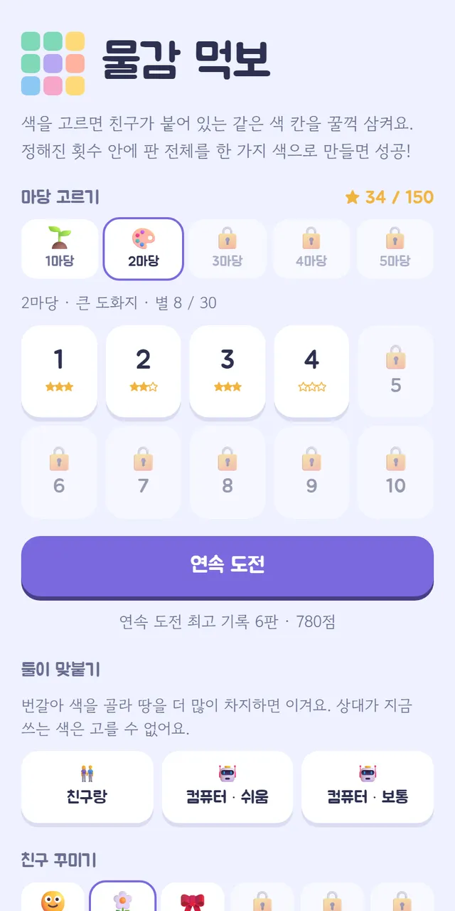
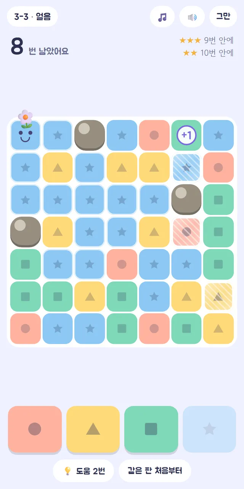
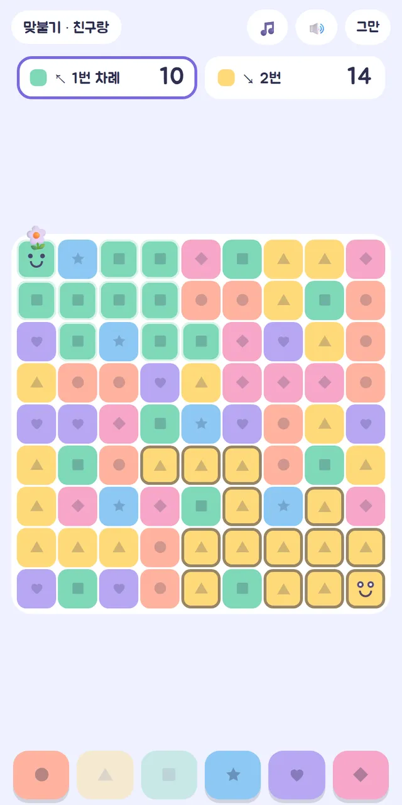

🧩 퍼즐 게임 · 무료 · 설치 없음
물감 먹보
“고른 색으로 꿀꺽! 판 전체를 한 색으로”
- 한 판 1~3분
- 5마당 50단계
- 둘이 맞붙기
- 별·기록 저장
회원가입 없이 누르면 바로 시작돼요
어떤 게임인가요?
판 한쪽 구석에 얼굴 친구가 앉아 있어요. 아래 색 단추를 누르면 친구가 그 색으로 바뀌면서, 붙어 있는 같은 색 칸을 꿀꺽 삼켜요. 정해진 횟수 안에 판 전체를 한 가지 색으로 만들면 성공이에요.
그때그때 가장 많이 삼키는 색만 고르면 깰 수는 있어도 별 세 개는 어려워요. 몇 수 앞을 내다보고 색을 고르는 순서를 짜야 해요. 같은 단계는 누가 열어도 같은 판이라, 친구와 「몇 번 만에 깼어?」를 겨룰 수 있어요.
마당을 넘어갈 때마다 새 칸이 나와요. 물들지 않는 돌멩이, 삼키면 횟수가 하나 늘어나는 +1 칸, 다른 색 물감이 닿아야 녹는 얼음, 어떤 색에도 붙는 무지개 칸까지. 마지막 마당은 판 한가운데에서 번지기 시작해요.
이렇게 해요
- STEP 1
색을 골라요
아래 색 단추를 누르면 얼굴 친구가 그 색으로 바뀌고 붙어 있는 같은 색 칸을 삼켜요. 1~2마당에서는 단추를 꾹 누르면 삼킬 칸이 반짝여요.
- STEP 2
순서를 짜요
남은 횟수 안에 판 전체를 한 색으로 만들어야 해요. 적은 횟수로 깰수록 별이 많아요. 막히면 💡 도움이 다음 색을 알려 줘요(단계마다 두 번).
- STEP 3
별을 모아요
별을 모으면 다음 마당과 연속 도전이 열리고, 얼굴 친구에게 씌울 꽃·리본·왕관 같은 꾸미기도 생겨요.


🌟 이런 것도 있어요
- 둘이 맞붙기: 반대쪽 구석에서 번갈아 색을 골라 땅을 더 많이 차지하면 이겨요. 상대가 지금 쓰는 색은 고를 수 없어요
- 컴퓨터와 맞붙기: 쉬움·보통 두 단계 컴퓨터와 겨룰 수 있어요
- 연속 도전: 판을 깰수록 조금씩 어려워지고, 남은 횟수만큼 점수가 쌓여요
맞붙기는 한 기기를 둘이 번갈아 누르는 방식이에요.
이런 분께 추천해요
- 짧게 머리를 쓰는 퍼즐을 좋아하는 분
- 옆 사람과 한 화면으로 겨뤄 보고 싶은 분
- 별 세 개를 끝까지 모으는 재미를 좋아하는 분
눈앞의 칸보다, 다음에 고를 색이 크게 이어지도록 길을 내는 색을 먼저 골라 보세요.
📱 어떤 기기에서 하면 좋을까요?
- 가장 좋아요휴대폰 세로 화면
색 단추를 누르기만 하면 돼서 한 손으로도 편해요.
- 가장 좋아요태블릿 세로 화면
판이 크게 보여서 둘이 맞붙기에 가장 좋아요.
- 좋아요컴퓨터·노트북 마우스
마우스로 색 단추를 누르면 돼요. Tab 키로 단추를 옮기고 Enter로 누를 수도 있어요.
오른쪽 위 메뉴(⋮ 또는 ···)에서 「다른 브라우저로 열기」를 눌러 크롬이나 사파리로 열어 주세요. 앱 안에서는 전체 화면이 안 되고 저장이 풀릴 수 있어요.
🍎 아이폰·아이패드에서는
- ① 사파리로 열기
카카오톡이나 네이버 앱 안에서는 화면이 좁아요. 「다른 브라우저로 열기」나 사파리로 열어 주세요.
- ② 화면 넓게 쓰기
전체 화면 버튼은 없어요. 주소창 왼쪽 「aA」 → 「도구 막대 가리기」를 누르면 판이 더 크게 보여요.
- ③ 소리
무음 스위치가 켜져 있으면 소리가 나지 않아요. 효과음과 배경 음악은 화면 위 단추로 따로 켜고 끌 수 있어요.
🤖 갤럭시 등 안드로이드에서는
크롬이나 삼성 인터넷으로 열면 돼요. 칸을 많이 삼키면 짧게 진동해요.
▶ 바로 해 보기
설치도, 회원가입도 필요 없어요.
물감 먹보 시작하기game.edoori.co.kr/meokbo/